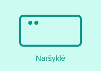
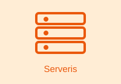

Kas vyksta, kai įvedame adresą?

Naršyklė pirmiausia išsiaiškina serverio IP adresą, kreipdamasi į DNS. Tada ji užmezga ryšį su serveriu ir išsiunčia HTTP užklausą, kurioje nurodo, kokio puslapio nori.
Gavusi HTML, naršyklė jį nuskaito iš viršaus į apačią, randa nuorodas į CSS ir JavaScript failus ir parsisiunčia juos atskiromis užklausomis.

Serveris gauna užklausą, suranda reikiamą failą arba sugeneruoja atsakymą ir grąžina jį kartu su būsenos kodu, pavyzdžiui, 200 OK.
Kitoje paskaitoje: DevTools skirtukas Network ir užklausų analizė.